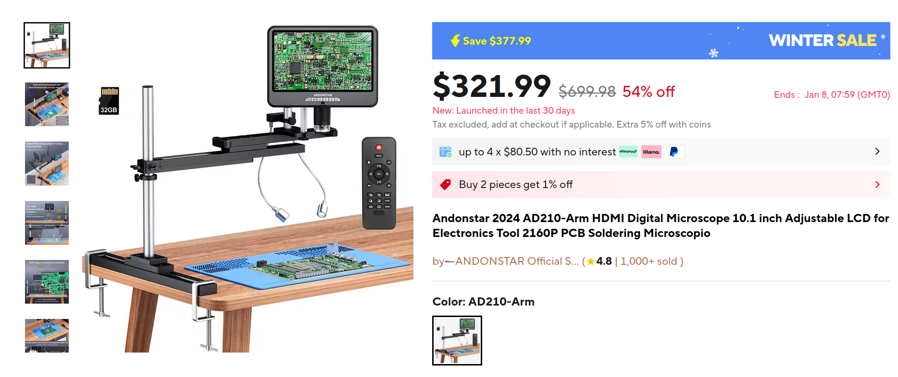

Choosing XYZ stage
Option 1. 3D printer based system
- table and printing head have to be modified
- typical accessible volume is 30 x 30 x 30 cm³
- easy to modify the software
- expected resolution: ~10 μm
- very cheap (< $1000 for stage and controller)
- easy to modify and fix
- many kinematics avaliable
- a separate piezo stage could be installed for even higher resolution
- demostration video:
Option 2. Optical XYZ stages

- high resolution (~1 μm)
- high rigidity
- compact
- small accessible volume (8.5 x 8.5 x 8.5 cm³). Could be higher, but price goes up, too
- pricey: $3600 + $3000 (controller)
Choosing vacuum tweezers
- there are many options avaliable
Choosing microscope
Option 1. Cheap microscope from China
 Example: Andonstar 2024 AD210-Arm
Option 2. Xu Han’s experience (separate imaging lens + camera)

- price is unknown
Option 3. Optical microscope
- could be expensive
Choosing vacuum table

- more avaliable options on eBay